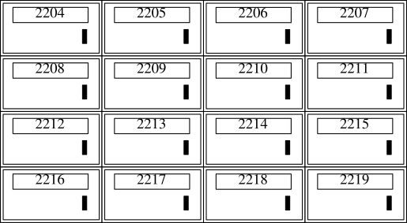

Computer Architecture¶
Before learning how to program, you need to first understand how a computer interprets programs. You don’t need a degree in electrical engineering, but you need to understand some basics.
Modern computer architecture is based off of an architecture called the Von Neumann architecture, named after its creator. The Von Neumann architecture divides the computer up into two main parts - the CPU (for Central Processing Unit) and the memory. This architecture is used in all modern computers, including personal computers, supercomputers, mainframes, and even cell phones.
Structure of Computer Memory¶
To understand how the computer views memory, imagine your local post office. They usually have a room filled with PO Boxes. These boxes are similar to computer memory in that each are numbered sequences of fixed-size storage locations. For example, if you have 256 megabytes of computer memory, that means that your computer contains roughly 256 million fixed-size storage locations. Or, to use our analogy, 256 million PO Boxes. Each location has a number, and each location has the same, fixed-length size. The difference between a PO Box and computer memory is that you can store all different kinds of things in a PO Box, but you can only store a single number in a computer memory storage location.

You may wonder why a computer is organized this way. It is because it is simple to implement. If the computer were composed of a lot of differently-sized locations, or if you could store different kinds of data in them, it would be difficult and expensive to implement.
The computer’s memory is used for a number of different things. All of the results of any calculations are stored in memory. In fact, everything that is “stored” is stored in memory. Think of your computer at home, and imagine what all is stored in your computer’s memory.
The location of your cursor on the screen
The size of each window on the screen
The shape of each letter of each font being used
The layout of all of the controls on each window
The graphics for all of the toolbar icons
The text for each error message and dialog box
The list goes on and on…
In addition to all of this, the Von Neumann architecture specifies that not only computer data should live in memory, but the programs that control the computer’s operation should live there, too. In fact, in a computer, there is no difference between a program and a program’s data except how it is used by the computer. They are both stored and accessed the same way.
The CPU¶
So how does the computer function? Obviously, simply storing data doesn’t do much help - you need to be able to access, manipulate, and move it. That’s where the CPU comes in.
The CPU reads in instructions from memory one at a time and executes them. This is known as the fetch-execute cycle. The CPU contains the following elements to accomplish this:
Program Counter
Instruction Decoder
Data bus
General-purpose registers
Arithmetic and logic unit
The program counter is used to tell the computer where to fetch the next instruction from. We mentioned earlier that there is no difference between the way data and programs are stored, they are just interpreted differently by the CPU. The program counter holds the memory address of the next instruction to be executed. The CPU begins by looking at the program counter, and fetching whatever number is stored in memory at the location specified. It is then passed on to the instruction decoder which figures out what the instruction means. This includes what process needs to take place (addition, subtraction, multiplication, data movement, etc.) and what memory locations are going to be involved in this process. Computer instructions usually consist of both the actual instruction and the list of memory locations that are used to carry it out.
Now the computer uses the data bus to fetch the memory locations to be used in the calculation. The data bus is the connection between the CPU and memory. It is the actual wire that connects them. If you look at the motherboard of the computer, the wires that go out from the memory are your data bus.
In addition to the memory on the outside of the processor, the processor itself has some special, high-speed memory locations called registers. There are two kinds of registers - general registers and special-purpose registers. General-purpose registers are where the main action happens. Addition, subtraction, multiplication, comparisions, and other operations generally use general-purpose registers for processing. However, computers have very few general-purpose registers. Most information is stored in main memory, brought in to the registers for processing, and then put back into memory when the processing is completed. special-purpose registers are registers which have very specific purposes. We will discuss these as we come to them.
Now that the CPU has retrieved all of the data it needs, it passes on the data and the decoded instruction to the arithmetic and logic unit for further processing. Here the instruction is actually executed. After the results of the computation have been calculated, the results are then placed on the data bus and sent to the appropriate location in memory or in a register, as specified by the instruction.
This is a very simplified explanation. Processors have advanced quite a bit in recent years, and are now much more complex. Although the basic operation is still the same, it is complicated by the use of cache hierarchies, superscalar processors, pipelining, branch prediction, out-of-order execution, microcode translation, coprocessors, and other optimizations. Don’t worry if you don’t know what those words mean, you can just use them as Internet search terms if you want to learn more about the CPU.
Some Terms¶
Computer memory is a numbered sequence of fixed-size storage locations. The number attached to each storage location is called its address. The size of a single storage location is called a byte. On x86 processors, a byte is a number between 0 and 255.
You may be wondering how computers can display and use text, graphics, and even large numbers when all they can do is store numbers between 0 and 255. First of all, specialized hardware like graphics cards have special interpretations of each number. When displaying to the screen, the computer uses ASCII code tables to translate the numbers you are sending it into letters to display on the screen, with each number translating to exactly one letter or numeral. [1] For example, the capital letter A is represented by the number 65. The numeral 1 is represented by the number 49. So, to print out “HELLO”, you would actually give the computer the sequence of numbers 72, 69, 76, 76, 79. To print out the number 100, you would give the computer the sequence of numbers 49, 48, 48. A list of ASCII characters and their numeric codes is found in Table of ASCII Codes.
In addition to using numbers to represent ASCII characters, you as the programmer get to make the numbers mean anything you want them to, as well. For example, if I am running a store, I would use a number to represent each item I was selling. Each number would be linked to a series of other numbers which would be the ASCII codes for what I wanted to display when the items were scanned in. I would have more numbers for the price, how many I have in inventory, and so on.
So what about if we need numbers larger than 255? We can simply use a combination of bytes to represent larger numbers. Two bytes can be used to represent any number between 0 and 65535. Four bytes can be used to represent any number between 0 and 4294967295. Now, it is quite difficult to write programs to stick bytes together to increase the size of your numbers, and requires a bit of math. Luckily, the computer will do it for us for numbers up to 4 bytes long. In fact, four-byte numbers are what we will work with by default.
We mentioned earlier that in addition to the regular memory that the computer has, it also has special-purpose storage locations called registers. Registers are what the computer uses for computation. Think of a register as a place on your desk - it holds things you are currently working on. You may have lots of information tucked away in folders and drawers, but the stuff you are working on right now is on the desk. Registers keep the contents of numbers that you are currently manipulating.
On the computers we are using, registers are each four bytes long. The size of a typical register is called a computer’s word size. x86 processors have four-byte words. This means that it is most natural on these computers to do computations four bytes at a time. [2] This gives us roughly 4 billion values.
Addresses are also four bytes (1 word) long, and therefore also fit into a register. x86 processors can access up to 4294967296 bytes if enough memory is installed. Notice that this means that we can store addresses the same way we store any other number. In fact, the computer can’t tell the difference between a value that is an address, a value that is a number, a value that is an ASCII code, or a value that you have decided to use for another purpose. A number becomes an ASCII code when you attempt to display it. A number becomes an address when you try to look up the byte it points to. Take a moment to think about this, because it is crucial to understanding how computer programs work.
Addresses which are stored in memory are also called pointers, because instead of having a regular value in them, they point you to a different location in memory.
As we’ve mentioned, computer instructions are also stored in memory. In fact, they are stored exactly the same way that other data is stored. The only way the computer knows that a memory location is an instruction is that a special-purpose register called the instruction pointer points to them at one point or another. If the instruction pointer points to a memory word, it is loaded as an instruction. Other than that, the computer has no way of knowing the difference between programs and other types of data. [3]
Interpreting Memory¶
Computers are very exact. Because they are exact, programmers have to be equally exact. A computer has no idea what your program is supposed to do. Therefore, it will only do exactly what you tell it to do. If you accidentally print out a regular number instead of the ASCII codes that make up the number’s digits, the computer will let you - and you will wind up with jibberish on your screen (it will try to look up what your number represents in ASCII and print that). If you tell the computer to start executing instructions at a location containing data instead of program instructions, who knows how the computer will interpret that - but it will certainly try. The computer will execute your instructions in the exact order you specify, even if it doesn’t make sense.
The point is, the computer will do exactly what you tell it, no matter how little sense it makes. Therefore, as a programmer, you need to know exactly how you have your data arranged in memory. Remember, computers can only store numbers, so letters, pictures, music, web pages, documents, and anything else are just long sequences of numbers in the computer, which particular programs know how to interpret.
For example, say that you wanted to store customer information in memory. One way to do so would be to set a maximum size for the customer’s name and address - say 50 ASCII characters for each, which would be 50 bytes for each. Then, after that, have a number for the customer’s age and their customer id. In this case, you would have a block of memory that would look like this:
Start of Record:
Customer's name (50 bytes) - start of record
Customer's address (50 bytes) - start of record + 50 bytes
Customer's age (1 word = 4 bytes) - start of record + 100 bytes
Customer's id number (1 word = 4 bytes) - start of record + 104 bytes
This way, given the address of a customer record, you know where the rest of the data lies. However, it does limit the customer’s name and address to only 50 ASCII characters each.
What if we didn’t want to specify a limit? Another way to do this would be to have in our record pointers to this information. For example, instead of the customer’s name, we would have a pointer to their name. In this case, the memory would look like this:
Start of Record:
Customer's name pointer (1 word) - start of record
Customer's address pointer (1 word) - start of record + 4
Customer's age (1 word) - start of record + 8
Customer's id number (1 word) - start of record + 12
The actual name and address would be stored elsewhere in memory. This way, it is easy to tell where each part of the data is from the start of the record, without explicitly limitting the size of the name and address. If the length of the fields within our records could change, we would have no idea where the next field started. Because records would be different sizes, it would also be hard to find where the next record began. Therefore, almost all records are of fixed lengths. Variable-length data is usually stored separately from the rest of the record.
Data Accessing Methods¶
Processors have a number of different ways of accessing data, known as addressing modes. The simplest mode is immediate mode, in which the data to access is embedded in the instruction itself. For example, if we want to initialize a register to 0, instead of giving the computer an address to read the 0 from, we would specify immediate mode, and give it the number 0.
In the register addressing mode, the instruction contains a register to access, rather than a memory location. The rest of the modes will deal with addresses.
In the direct addressing mode, the instruction contains the memory address to access. For example, I could say, please load this register with the data at address 2002. The computer would go directly to byte number 2002 and copy the contents into our register.
In the indexed addressing mode, the instruction contains a memory address to access, and also specifies an index register to offset that address. For example, we could specify address 2002 and an index register. If the index register contains the number 4, the actual address the data is loaded from would be 2006. This way, if you have a set of numbers starting at location 2002, you can cycle between each of them using an index register. On x86 processors, you can also specify a multiplier for the index. This allows you to access memory a byte at a time or a word at a time (4 bytes). If you are accessing an entire word, your index will need to be multiplied by 4 to get the exact location of the fourth element from your address. For example, if you wanted to access the fourth byte from location 2002, you would load your index register with 3 (remember, we start counting at 0) and set the multiplier to 1 since you are going a byte at a time. This would get you location 2005. However, if you wanted to access the fourth word from location 2002, you would load your index register with 3 and set the multiplier to 4. This would load from location 2014 - the fourth word. Take the time to calculate these yourself to make sure you understand how it works.
In the indirect addressing mode, the instruction contains a register that contains a pointer to where the data should be accessed. For example, if we used indirect addressing mode and specified the %eax; register, and the %eax; register contained the value 4, whatever value was at memory location 4 would be used. In direct addressing, we would just load the value 4, but in indirect addressing, we use 4 as the address to use to find the data we want.
Finally, there is the base pointer addressing mode. This is similar to indirect addressing, but you also include a number called the offset to add to the register’s value before using it for lookup. We will use this mode quite a bit in this book.
In Interpreting Memory we discussed having a structure in memory holding customer information. Let’s say we wanted to access the customer’s age, which was the eighth byte of the data, and we had the address of the start of the structure in a register. We could use base pointer addressing and specify the register as the base pointer, and 8 as our offset. This is a lot like indexed addressing, with the difference that the offset is constant and the pointer is held in a register, and in indexed addressing the offset is in a register and the pointer is constant.
There are other forms of addressing, but these are the most important ones.
Review¶
Know the Concepts¶
Describe the fetch-execute cycle.
What is a register? How would computation be more difficult without registers?
How do you represent numbers larger than 255?
How big are the registers on the machines we will be using?
How does a computer know how to interpret a given byte or set of bytes of memory?
What are the addressing modes and what are they used for?
What does the instruction pointer do?
Use the Concepts¶
What data would you use in an employee record? How would you lay it out in memory?
If I had the pointer to the beginning of the employee record above, and wanted to access a particular piece of data inside of it, what addressing mode would I use?
In base pointer addressing mode, if you have a register holding the value 3122, and an offset of 20, what address would you be trying to access?
In indexed addressing mode, if the base address is 6512, the index register has a 5, and the multiplier is 4, what address would you be trying to access?
In indexed addressing mode, if the base address is 123472, the index register has a 0, and the multiplier is 4, what address would you be trying to access?
In indexed addressing mode, if the base address is 9123478, the index register has a 20, and the multiplier is 1, what address would you be trying to access?
Going Further¶
What are the minimum number of addressing modes needed for computation?
Why include addressing modes that aren’t strictly needed?
Research and then describe how pipelining (or one of the other complicating factors) affects the fetch-execute cycle.
Research and then describe the tradeoffs between fixed-length instructions and variable-length instructions.